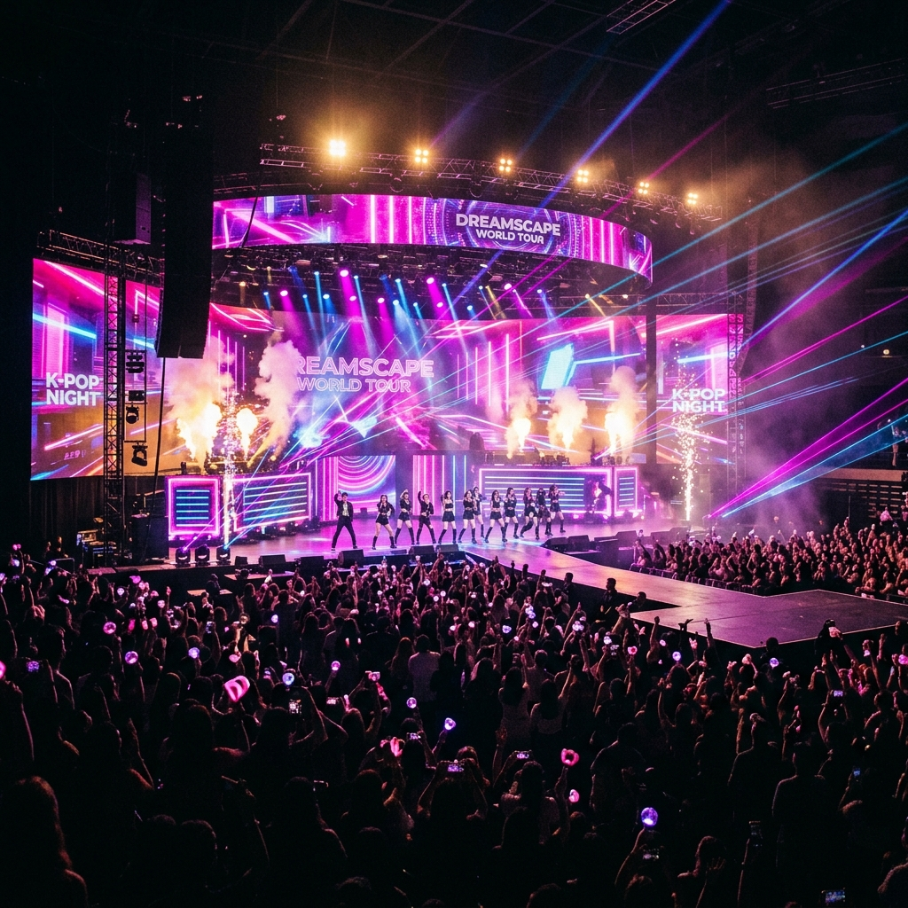

More than just music. A vibrant cultural revolution born in South Korea, redefining the global entertainment landscape.
From 1992 to Global Dominance
힙합, 랩, 락 등 서구 장르를 한국적 정서와 결합하며 현대 K-POP의 패러다임을 제시했습니다. K-POP 역사의 실질적인 시작점으로 평가받습니다.
SM, JYP, YG 등 대형 기획사를 중심으로 H.O.T., S.E.S. 등이 등장하며 체계적인 트레이닝 시스템이 구축되었습니다.
유튜브와 소셜 미디어를 통해 방탄소년단(BTS), 블랙핑크가 전 세계적인 신드롬을 일으키며 K-POP은 주류 팝 시장에 안착했습니다.

위키피디아에 따르면, K-POP은 대한민국에서 대중적 인기를 얻는 대중음악을 통칭하지만, 현대적으로는 전문적인 트레이닝을 거친 '아이돌'이 선보이는 화려한 퍼포먼스와 음악의 결합을 의미합니다.
팝, 힙합, EDM, R&B를 완벽하게 혼합한 고유의 사운드.
칼군무와 포인트 안무를 통한 압도적인 시각적 경험.
The faces of a generation
21세기 최고의 아티스트 중 하나로 꼽히며 전 세계 음악 시장의 판도를 바꿨습니다.
음악을 넘어 글로벌 패션 아이콘으로 자리 잡으며 강력한 문화적 영향력을 행사합니다.
신선한 노스탤직 사운드로 Z세대와 전 세대를 아우르는 새로운 파도를 만들고 있습니다.